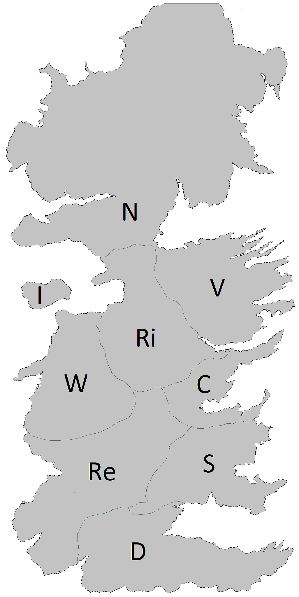

Assignment 2
Game Search, CSPs and Propositional Logic
Problem 1
Max: [4308: 15 Points,
5360: 10 Points]
Figure 1. A game search tree.
a. (4308: 10 points, 5360: 5 points)
In the game search tree of Figure 1, indicate what nodes will be pruned
using alpha-beta search, and what the estimated utility values are for
the rest of the nodes. Assume that, when given a choice, alpha-beta
search expands nodes in a left-to-right order. Also, assume the MAX
player plays first. Finally incidcate which action the Minmax algorithm
will pick to exectute.
b. (4308: 5 points, 5360: 5 points) This question is also on
the game search tree
of Figure 1. Suppose we are given some additional knowledge about the
game: the maximum utility value is 10, i.e., it is not mathematically
possible for the MAX player to get an outcome greater than 10. How can
this knowledge be used to further improve the efficiency of alpha-beta
search? Indicate the nodes that will be pruned using this improvement.
Again, assume that, when given a choice, alpha-beta search expands
nodes in a left-to-right order, and that the MAX player plays first.
Problem 2
Max: [4308: 10 Points,
5360: 10 Points]
Figure 2: Yet another game search tree
Consider
the MINIMAX tree above. Suppose that we are the MAX player, and we
follow the MINIMAX algorithm to play a full game against an opponent.
However, we
do not know what algorithm the opponent uses.
Under
these conditions, what is the best possible outcome of playing the full
game for the MAX player? What is the worst possible outcome for the MAX
player? Justify your answer.
NOTE:
the question is not asking you about what MINIMAX will compute for the
start node. It is asking you what is the best and worst outcome of a complete
game under
the assumptions stated above.
Problem 3
Max: [4308: 15 Points,
5360: 10 Points]
Figure 3: An Expectiminmax tree.
Find
the value of every non-terminal node in the expectiminmax tree given
above. Also indicate which action will be performed by the algoirithm.
What
does the MinMax value obtained by the root node represent. For a
particular game, what is the maximum and minmum actual payoff the MAX
player can get?
Problem 4
Max: [4308: 15 Points + 5 Points EC,
5360: 15 Points + 5 Points EC]
The following outline map needs to be colored. Your
job is to color the various sections such that no two sections
sharing a border have the same color. You are allowed to use the colors
(Red, Green, Blue).

Figure 5: Map to be colored.
Part a: Draw
the Constraint Graph for this problem. Can you use this information to
simplify the problem?
Part b:
Assuming you are using Backtracking search to solve this problem and
that you are using both MRV and Degree heuristic to select the
variable, Which variable will be selected at each level of the search
tree [You do not need to draw the tree. Just let me know which variable
will be selected and why (MRV and degree values)]. Note: Multiple
possible answers. You only have to give one.
Part c: EC (5 points): Give one valid solution to this
problem.
Problem 5
Max: [4308: 10 Points,
5360: 10 Points]
| A |
B |
C |
KB |
S1 |
| True |
True |
True |
True |
True |
| True |
True |
False |
False |
True |
| True |
False |
True |
True |
True |
| True |
False |
False |
False |
True |
| False |
True |
True |
False |
False |
| False |
True |
False |
False |
False |
| False |
False |
True |
False |
False |
| False |
False |
False |
False |
False |
KB and S1 are two propositional logic statements, that are constructed
using symbols A, B, C, and using various connectives. The above truth
table shows, for each combination of values of A, B, C, whether KB and
S1 are true or false.
Part a: Given the above
information, does KB entail S1? Justify your answer.
Part b: Given the above
information, does statement NOT(KB) entail statement NOT(S1)? Justify
your answer.
Problem 6
Max: [4308: 10 Points,
5360: 10 Points]
Suppose that some knowledge base contains various
propositional-logic sentences that utilize symbols A, B, C, D
(connected with various connectives). There are only two cases when the
knowledge base is false:
- First case: when A is false, B is true, C is true, D is true.
- Second case: when A is true, B is false, C is true, D is false.
In all other cases, the knowledge base is true. Write a conjunctive
normal form (CNF) for the knowledge base.
Problem 7
Max: [4308: 15 Points,
5360: 15 Points]
Consider the KB
(A <=> B) AND (B => C) AND (D => A) AND
(C AND E => F) AND E AND D
Show that this entails F by
i. Forward Chaining
ii. Backward Chaining
iii. Resolution
Problem 8
Max: [4308: 10 Points,
5360: 10 Points]
On April 20, 2019, John and Mary sign the following contract:
- If it rains on May 1, 2019, then John must give Mary a check for
$10,000 on May 2, 2019
- Mary must mow
the lawn on May 3, 2019 if and only if John gives Mary a check for $10,000 on May 2, 2019.
What truly happened those days is the following:
- It did not rain on May 1, 2019
- John gave Mary a check for $10,000 on May 2, 2019
- Mary mowed the lawn on May 3, 2019.
Part a: Write a propositional-logic
statement to express the contract. Make sure that, for each symbol that
you use, you clearly define what that symbol stands for.
Part b: Write a logical statement to
express what truly happened. When possible, use the same symbols as in
question 6a. If you need to define any new symbols, clearly define what
those new symbols stand for.
Part c: Was the contract violated
or not, Justify your answer
Problem 9 (Extra Credit for 4308, Required for 5360)
Max: [4308: 10 Points EC,
5360: 10 Points]
Suppose that you want to implement an algorithm tht will compete on a
two-player deterministic game of perfect information. Your opponent is
a supercomputer called DeepGreen. DeepGreen does not use Minimax. You
are given a library function DeepGreenMove(S), that takes any state S
as an argument, and returns the move that DeepGreen will choose for
that state S (more precisely, DeepGreenMove (S) returns the state
resulting from the opponent's move).
Write
an algorithm in pseudocode (following the style of the Minimax
pseudocode) that will always make an optimal decision given the
knowledge we have about DeepGreen. You are free to use the library
function DeepGreenMove(S) in your pseudocode. How does this compare to
Minimax wrt optimality of solution and the number of states explored.
{kind=link}